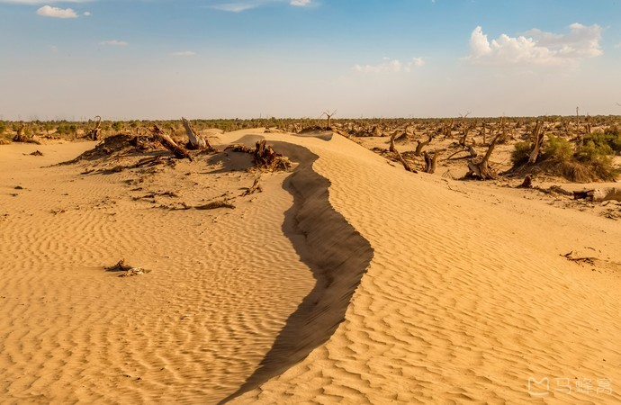
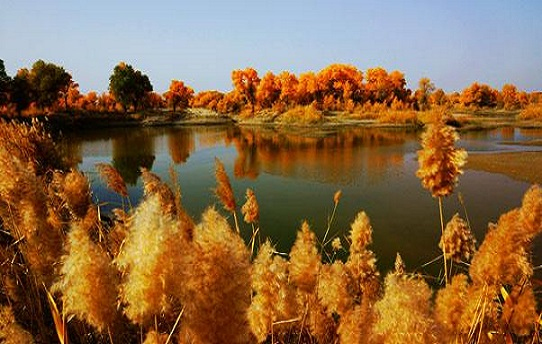
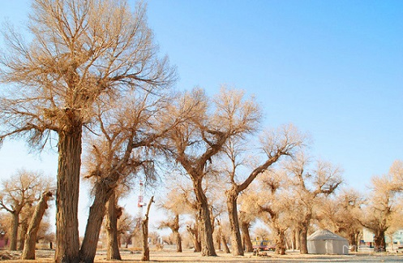
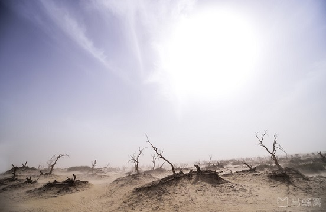

morly旅游网
人们总是对秋季的景色，抱有特别的期待，因为秋季，也是一年四季中，最美的时节，多彩的山林，金黄的银杏，或者是红叶林等等。而来到新疆巴音郭楞自治州的塔里木胡杨林公园，你不仅仅能够感受到震撼的胡杨林美景，同时也可以感受到壮阔的沙漠景色，赶紧来瞧瞧。
塔里木胡杨林公园是中国最美的十大森林公园之一，位于塔克拉玛干沙漠东北边缘的塔里木河中游、巴州轮台县城南沙漠公路70公里处。公园集塔河自然景观、胡杨景观、沙漠景观为一体，是世界上最古老、面积最大、保存最完整、最原始的胡杨林保护区。
塔里木胡杨林公园历史遗迹众多，在距公园西南约10公里处，屹立着2000多年前的汉代烽燧，是戍边将士不朽的丰碑；景区中，一条古老的道路“丝绸之路”在胡杨林中穿行。
塔里木胡杨林这片胡杨林是新疆面积最大的原始胡杨林，也是我国唯一的一片生长在沙漠里的胡杨林。来这里不仅仅只是观看如诗如画的风景，更加是被这片胡杨林坚韧的生命力所感染，这里的树生而不死一千年，死而不倒一千年，倒而不朽一千年。就是说就算是树死了，但是树魂只剩皮还依然挺立。非常值得人佩服。
最佳旅行时间
虽然最佳的旅游时间为5月至11月，但是夏季的时候，胡杨林还是绿色的一片，给不了你深秋的壮观之美。不过，就算是夏季，也会让你感觉很壮观。那种顽强的生命力，即便是枯萎，也有一千年不倒之说。等到了深秋的时候，胡杨林的叶片开始变成金黄色的，不管是在沙漠中感受胡杨林，还是在湖面上看胡杨林的倒影，都会让你觉得，这才是深秋最美的景色。
对于摄影爱好者来说，真的是可以好好的放纵一下了，很多地方都可以成为一个很好的取景点，来拍摄比较好看的风景。最值得一看的，应该是水面倒影的美吧。
交通
在巴州汽车客运总站乘坐去轮台县的班车（10：00-21：00，约30分钟一班，票价38元，车程约2.5小时），然后在轮台客运站转去塔河桥镇的班车（10：00-18：00，每2小时一班，票价18元），在公园门口下车，返回时可以在路边搭乘塔河桥镇至轮台县的班车，轮台县最晚20：00还有车发往库尔勒。
注意事项
因为考虑到风沙的问题，所以去的话，还是带上围巾等防护装备为好。 另外有人反映这里有很多的蚊子，可能是夏季的时候吧。
 门票
旺季（5月1日至11月30日）45元，淡季（12月1日至次年4月30日）30元，区间车往返/单程30元/20元。
开放时间
9:30--21:30
内容整理至网络，如有侵权，请联系我们！1255394075@qq.com